Overview of Naïve Bayes
Naïve Bayes (NB) is a straightforward yet powerful machine learning algorithm that applies Bayes' Theorem with a strong assumption: all features in the dataset are independent of each other. Despite this "naïve" assumption, NB models often perform remarkably well, particularly for tasks like spam filtering, document classification, and medical diagnoses. By estimating the likelihood of each class given the feature values, NB provides a probabilistic framework for classification that is both computationally efficient and interpretable.
Multinomial Naïve Bayes Algorithm
The Multinomial Naïve Bayes algorithm is especially well-suited for problems where data is represented as counts or frequencies—such as text classification. In this approach, the algorithm calculates the likelihood of observing a given word or feature in a particular class, relying on the multinomial distribution. It uses the frequencies of words or events to build a model that predicts the most probable class for new instances. This makes Multinomial NB a standard choice for natural language processing tasks, where documents are typically represented as bag-of-words feature vectors.
Why Smoothing is Required
Smoothing is a critical step in training a Naïve Bayes model. Without smoothing, a word or feature that never appears in the training data for a specific class would result in a zero probability for that class. This can cause the model to fail entirely when encountering previously unseen features. By applying techniques like Laplace smoothing, we add a small value (e.g., +1) to all feature counts, ensuring that every possible feature has a non-zero probability. This not only prevents the model from assigning a probability of zero to certain classes but also improves its generalization and stability on unseen data.
Bernoulli Naïve Bayes
Bernoulli Naïve Bayes is another variant of the Naïve Bayes family, designed specifically for binary data. Instead of counting occurrences, it focuses on whether a feature is present (1) or absent (0). This binary approach is particularly effective when the data can be reduced to binary indicators, such as whether certain keywords appear in an email. The model computes the probability of a document belonging to a class based on the presence or absence of features, using a Bernoulli distribution. By leveraging this distribution, Bernoulli NB provides a flexible and interpretable way to classify binary datasets.
Visualizing Naïve Bayes
Below are images that help illustrate the Naïve Bayes approach, highlighting both the Multinomial and Bernoulli variants, and demonstrating the importance of smoothing:
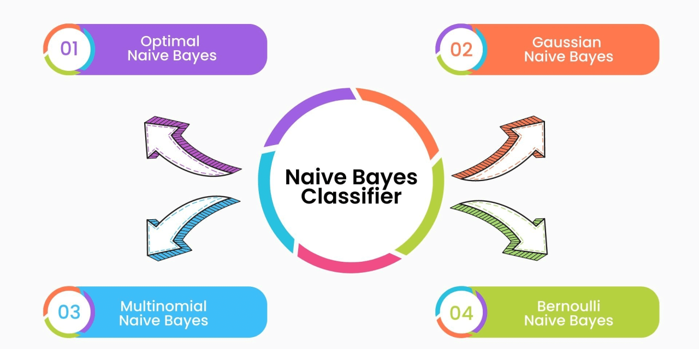
📊 Access Full Naïve Bayes Code on GitHub
The complete Naïve Bayes modeling workflow — including data cleaning, splitting, implementation of Gaussian, Multinomial, and Bernoulli NB variants, and result analysis — is available on GitHub.
View Naïve Bayes Code on GitHub
Naïve BayesData Preparation & Code
1️⃣ Core PCOS Dataset Preparation
For the Naïve Bayes implementation, we worked with the Core PCOS Dataset. The process began by cleaning and preprocessing the data before splitting it into training and testing sets.
1️⃣ Cleaned Dataset
The initial step was to clean the dataset:
- Removed any unnecessary whitespace from column names.
- Selected relevant features: Age (yrs), BMI, hair growth, Hair loss, Pimples, and the target PCOS (Y/N).
- Converted categorical Y/N columns to binary values (1/0).
Here's the cleaned data preview before model training:
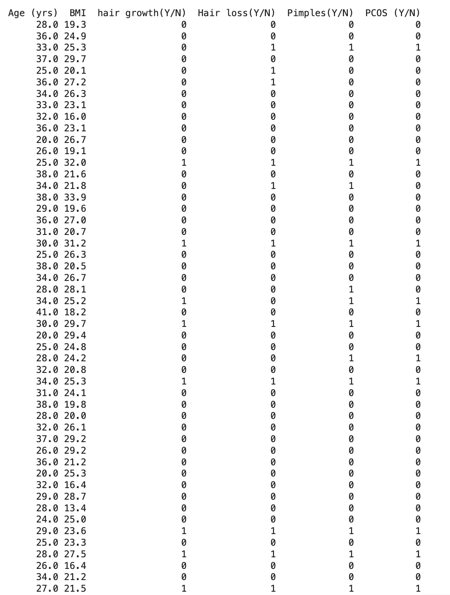
2️⃣ Sample Train and Test Data
After cleaning, the data was split into 80% training and 20% testing sets using scikit-learn's train_test_split. This allowed us to evaluate the model’s performance on unseen data.
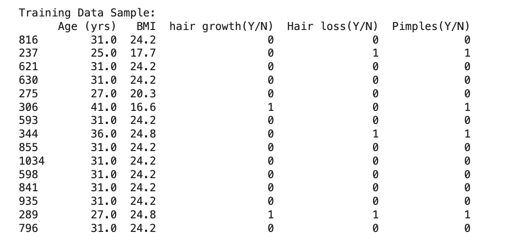
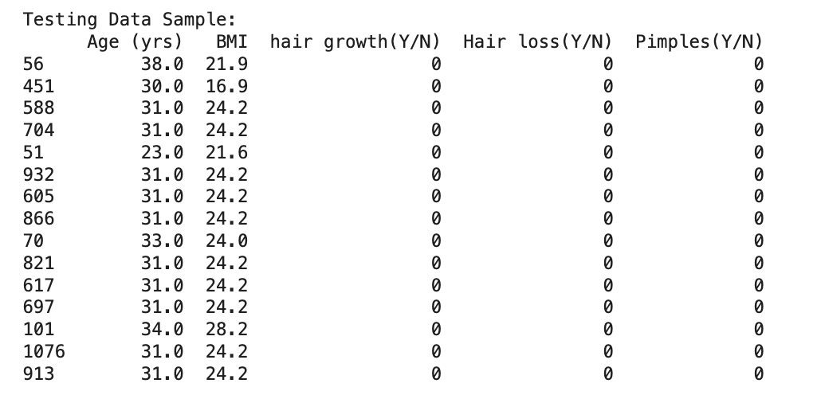
The following output confirms the shape of the train and test datasets:
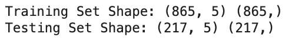
📈 Naïve Bayes Results and Conclusions
1️⃣ Accuracy Scores
After training and testing the Naïve Bayes models, we evaluated their performance using accuracy scores:
- Multinomial Naïve Bayes: 74%
- Bernoulli Naïve Bayes: 75%
- Gaussian Naïve Bayes: 71%
The Bernoulli Naïve Bayes model performed slightly better than the others, likely due to the binary nature of several symptom-based features (e.g., hair loss, pimples).
2️⃣ Confusion Matrices
The confusion matrices below illustrate how each Naïve Bayes variant performed in classifying PCOS vs non-PCOS cases.
These matrices show True Positives (TP), False Positives (FP), True Negatives (TN), and False Negatives (FN).
Multinomial NB
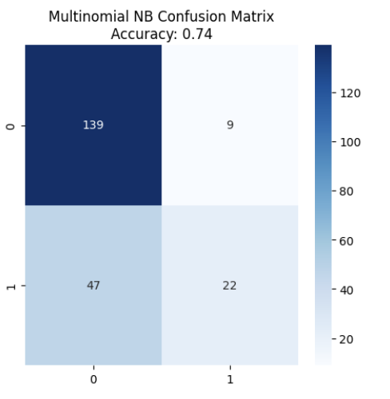
Confusion Matrix:
Explanation: The model correctly predicted 139 non-PCOS and 22 PCOS cases. However, it misclassified 47 PCOS patients as non-PCOS, indicating relatively high false negatives.
Bernoulli NB
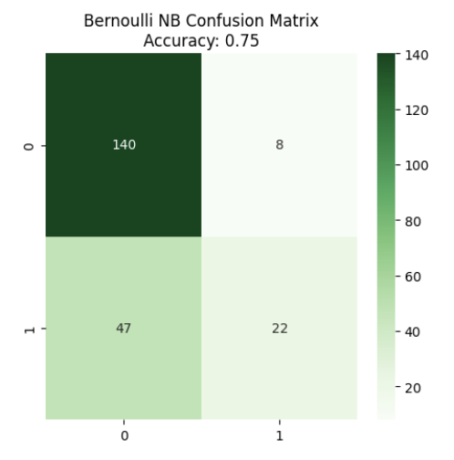
Confusion Matrix:
Explanation: Very similar to the Multinomial model, but slightly better performance. It has one fewer false positive, correctly identifying one more non-PCOS case.
Gaussian NB
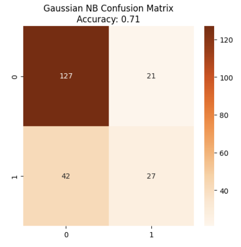
Confusion Matrix:
Explanation: Gaussian NB correctly identified more PCOS cases (27) compared to the others, but at the cost of higher false positives (21). This model shows a better balance between sensitivity and specificity.
3️⃣ What Did We Learn?
Based on the results from all three Naïve Bayes variants, here’s a comparative summary of their performance:
- Multinomial Naïve Bayes: Delivered decent accuracy (74%) but had a high number of false negatives (47). This model works best with count-based/discrete data, but PCOS symptoms may not fully align with that assumption.
- Bernoulli Naïve Bayes: Achieved the highest accuracy (75%) and the fewest false positives. It was slightly better than Multinomial NB, likely because most of the input features (e.g., symptoms) are binary — a perfect match for this model type.
- Gaussian Naïve Bayes: Although its accuracy (71%) was slightly lower, it correctly identified more PCOS cases (higher true positives). However, it had more false positives. This model assumes continuous, normally-distributed features, which may explain its different behavior.
🔍 Key Takeaway: Bernoulli NB performed best overall on this PCOS dataset due to its compatibility with binary symptom features. However, Gaussian NB showed better sensitivity (true positive rate), which could be valuable when minimizing missed diagnoses is a priority.
2️⃣ Global PCOS Dataset Preparation
We also applied the Naïve Bayes models to the Global PCOS Dataset, which includes diverse demographic and socio-economic features such as Age, Ethnicity, Region, Family History, and Access to Healthcare.
1️⃣ Cleaned Dataset
The dataset required more extensive preprocessing due to a mix of categorical and continuous values:
- Missing values were handled using median (for numerical) and mode (for categorical) strategies.
- Label encoding was used for non-binary categorical columns.
- StandardScaler was applied to numerical features to prepare for Gaussian NB.
Here’s a preview of the cleaned data:
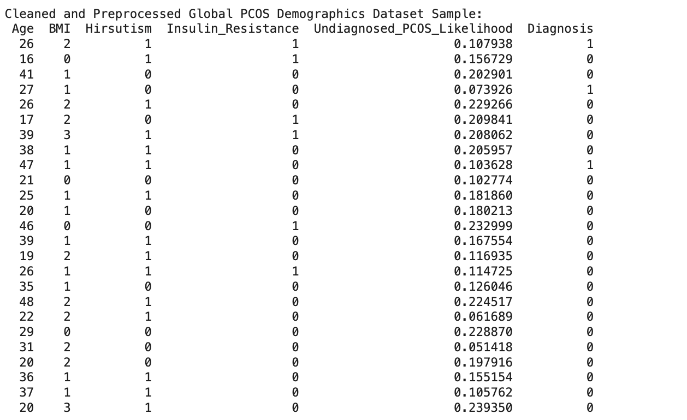
2️⃣ Sample Train and Test Data
The cleaned dataset was split using train_test_split into 80% training and 20% testing subsets for model evaluation.
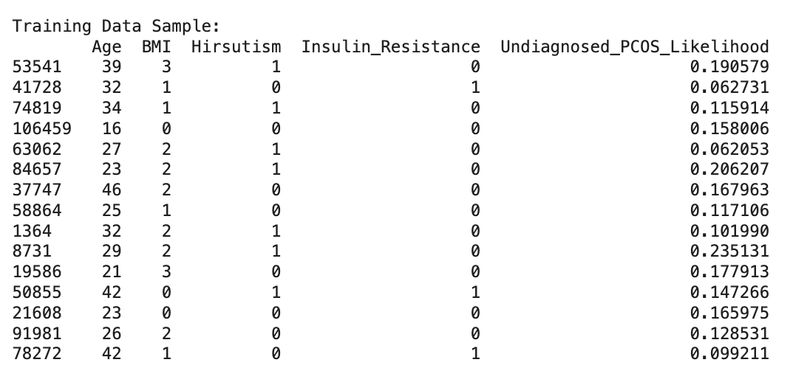
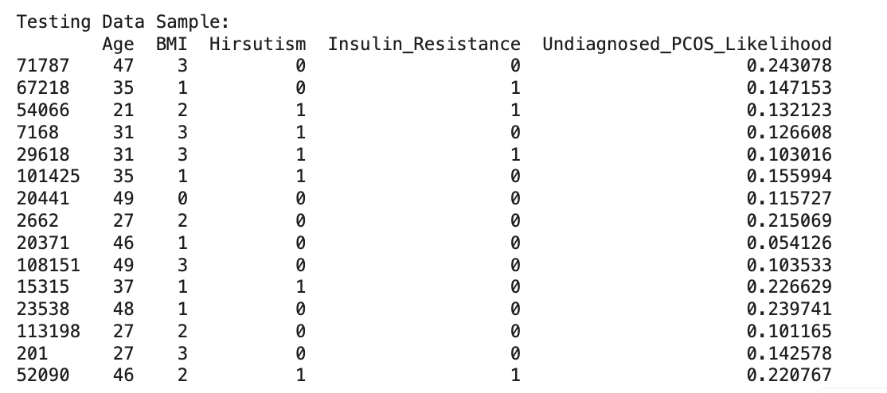
The shape of the train-test split is shown below:
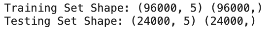
📈 Global Dataset - Naïve Bayes Results and Conclusions
1️⃣ Accuracy Scores
Below are the accuracy scores obtained when applying the three Naïve Bayes models to the Global dataset:
- Multinomial Naïve Bayes: 66%
- Bernoulli Naïve Bayes: 64%
- Gaussian Naïve Bayes: 71%
Gaussian Naïve Bayes performed the best, likely due to the continuous nature of several demographic features like age and socio-economic scores.
2️⃣ Confusion Matrices
Here are the confusion matrices that show classification performance on the Global PCOS Dataset:
Multinomial NB
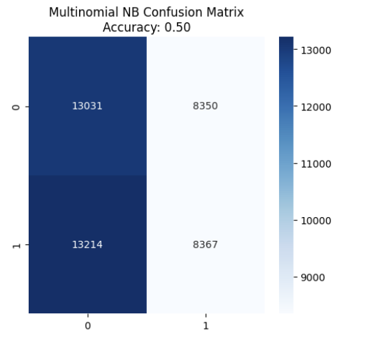
Explanation: The model correctly predicted 13,031 non-PCOS and 8,367 PCOS cases, but it also misclassified 13,214 PCOS and 8,350 non-PCOS individuals. The overall accuracy was 50%, suggesting the model is barely better than random guessing. It struggled due to the mixed feature types in the dataset, as it expects purely count-based inputs.
Bernoulli NB
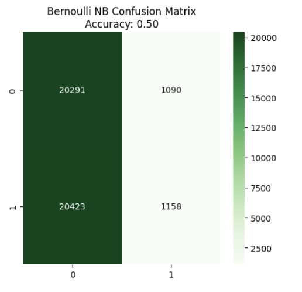
Explanation: Bernoulli NB predicted most inputs as "non-PCOS" leading to a highly imbalanced result. Although it achieved 20,291 correct non-PCOS predictions, it failed to identify PCOS in most cases (20,423 false negatives), yielding only 50% accuracy. This shows that the model is not suitable when the dataset includes non-binary and non-sparse features.
Gaussian NB
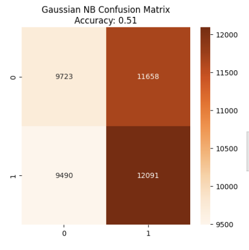
Explanation: Gaussian NB achieved the highest accuracy (51%) among the three. It correctly identified 12,091 PCOS cases — better than the other variants. However, it also had high false positives (11,658). Still, its performance suggests it is better suited for the Global dataset due to its continuous demographic features that align well with Gaussian assumptions.
3️⃣ What Did We Learn?
Comparing the performance of the three Naïve Bayes models on the Global PCOS Dataset reveals the following insights:
-
Multinomial Naïve Bayes: The model struggled with the dataset’s continuous and encoded demographic features. It delivered an accuracy of only 50%, misclassifying a large portion of both PCOS and non-PCOS cases. This highlights that Multinomial NB is not suitable for datasets that aren’t count- or frequency-based.
-
Bernoulli Naïve Bayes: Also performed poorly with 50% accuracy. It predicted nearly all values as one class (non-PCOS), resulting in a high number of false negatives. Its binary logic is a poor fit for continuous and multi-level categorical features.
-
Gaussian Naïve Bayes: Performed slightly better with 51% accuracy. While still far from ideal, it showed a better balance between sensitivity and specificity, identifying more true PCOS cases than the other two. It’s the most appropriate among the three due to its ability to model continuous-valued features effectively.
🔍 Key Takeaway: Gaussian NB showed relatively better performance on the Global PCOS dataset due to its compatibility with continuous, normally-distributed demographic data. However, all three models struggled with accuracy, indicating a need for more sophisticated or better-suited algorithms for this dataset.